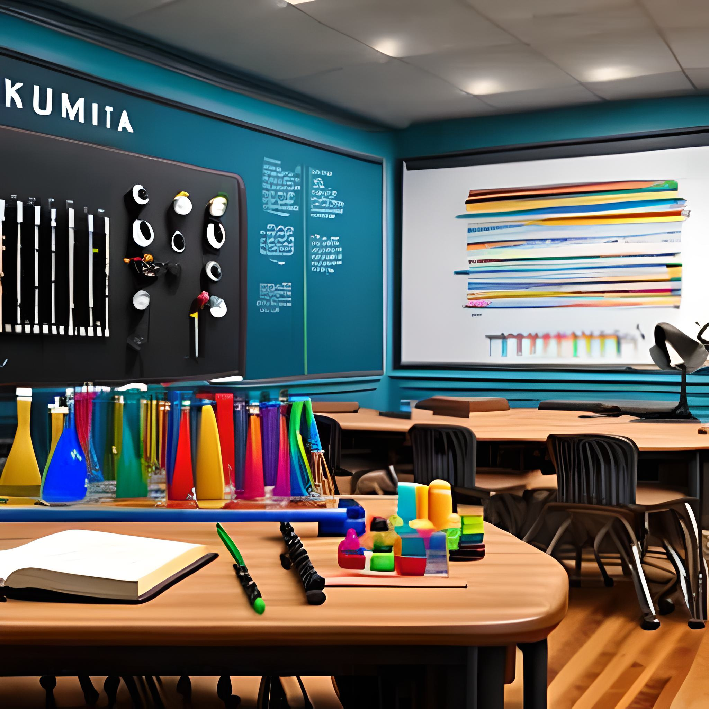

S.T.E.A.M. (Science, Technology, Engineering, Art, and Math)
 'S.T.E.A.M. (Science, Technology, Engineering, Art, and Math) is an interdisciplinary approach to education that encourages students to learn through hands-on, creative projects. Using S.T.E.A.M. as a learning methodology can have several benefits, such as:
- Encouraging critical thinking: S.T.E.A.M. projects often require students to think critically and solve problems creatively. This can help students develop their problem-solving skills and encourage them to approach challenges with a growth mindset.
- Fostering collaboration: S.T.E.A.M. projects often require students to work together in teams, which can help develop communication skills, leadership skills, and the ability to collaborate effectively.
- Making learning fun: By incorporating art and hands-on projects into the learning process, S.T.E.A.M. can make learning fun and engaging for students. This can help increase their motivation to learn and encourage them to pursue further learning in these fields.
- Preparing students for future careers: Many jobs in the modern workforce require skills in science, technology, engineering, and math. By incorporating art into S.T.E.A.M. education, students can develop a more well-rounded skill set that can prepare them for a wide range of future careers.
Some examples of S.T.E.A.M. projects could include designing and building a bridge, creating a stop-motion animation video, or designing a sustainable garden. By incorporating multiple disciplines into one project, students can gain a more holistic understanding of the subject matter and develop their creativity and problem-solving skills at the same time.